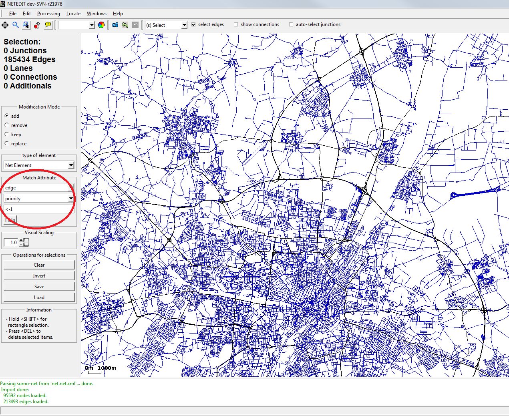

This tutorial describes how to set up a traffic scenario using mainly netedit, dfrouter and some python tools when you already have a fairly good network source for your simulation site and also a good coverage of the network with detectors giving you aggregated counts (and maybe speeds) of the vehicles in the real world. It is not limited to highways but the preconditions are met there more frequently. The focus is more on demand preparation and calibration and not so much on network tweaking. 
Selected edges (blue) are of minor priority and will be discarded
Network#
Assuming you are already familiar with network extraction from your favorite mapping source you can open your net with netedit and reduce it to your area of interest. Assume you have a navteq file you can select (and then delete) all edges with a priority of less than -1 to reduce it to a highway network. Afterwards one can use rectangle selection (hold shift) to further limit the area considered. You also might want to enable ramp guessing in the options dialog. If the network has been prepared by an older version of SUMO it is probably a good idea to recalculate all the connections afterwards. Do so by selecting all junctions in select mode and then resetting them in connect mode. There may still be missing ramps and unusual connections which could not be guessed automatically and which should be fixed manually after setting up the basic scenario.
Detector data#
Locating detectors#
Your final network should have locations for induction loops on many of the available edges. If you have detector positions as geo-coordinates it usually requires some manual work to locate the detectors in the network. A starting point can be to use the python sumolib to match the positions to the network:
sys.path.append(os.path.join(os.environ["SUMO_HOME"], 'tools')) import sumolib net = sumolib.net.readNet(<NETFILE>) detectors = [] for id, lon, lat in <DETECTOR_INPUTFILE>: xy_pos = net.convertLonLat2XY(lon, lat) # look 10m around the position lanes = net.getNeighboringLanes(xy_pos[0], xy_pos[1], 10) # attention, result is unsorted bestLane = None ref_d = 9999. for lane, dist in lanes: # now process them and determine a "bestLane" # ... if dist < ref_d: ref_d = dist bestLane = lane pos, d = bestLane.getClosestLanePosAndDist(xy_pos) detectors.append(sumolib.sensors.inductive_loop.InductiveLoop(id, bestLane.getID(), pos)) sumolib.files.additional.write(<DETECTORFILE>, detectors)
The frequency of data aggregation for data collection is 60 sec as default. The default output file name is set as none. Detector type (source, sink, between) can also be given if it is available. En example of the output file is shown below.
<additional xmlns:xsi="http://www.w3.org/2001/XMLSchema-instance" xsi:noNamespaceSchemaLocation="http://sumo.dlr.de/xsd/additional_file.xsd"> <e1Detector id=""det0"" lane="262667814#2.7_0" pos="80.2550814486" freq="60" file="NUL" friendlyPos="True"/> <e1Detector id=""det1"" lane="262667814#2.7_1" pos="90.2522181762" freq="60" file="NUL" friendlyPos="True"/> <e1Detector id=""det2"" lane="262667814#2.7_2" pos="91.6879752087" freq="60" file="NUL" friendlyPos="True"/> </additional>
Be aware to have the python rtree library installed if you are working with large networks. It will speed up the geometry lookups tremendously. Depending on the quality of your network and detector location data, you should probably not always choose the closest lane but also consider whether the number of lanes / the speed limit match your expectations. After the initial positioning you can load the file for fine tuning as an additional file into netedit.
Processing input data#
A common format for detector data is an aggregation into slots of one minute. The dfrouter can process files with the following formats:
- Detector definition
In addition to the above mentioned detector definition, the following definition can also be applied.
<detectors xmlns:xsi="http://www.w3.org/2001/XMLSchema-instance" xsi:noNamespaceSchemaLocation="http://sumo.dlr.de/xsd/detectors_file.xsd"> <detectorDefinition id="MQ11Fs1" lane="ErnstRuska2O_0" pos="5.00" type="source"/> <detectorDefinition id="MQ12Fs1" lane="ErnstRuska2W_0" pos="-5.00" type="between"/> <detectorDefinition id="MQ13Fs1N" lane="EinsteinN_0" pos="5.00" type="sink"/> </detectors>
- Flow data
The data about detector id, time and the number of each vehicle type must be given, while speed data is optional. All data is saved in csv format.
Detector_id;Time(minutes);Number_of_passenger_cars;Number_of_trucks;Average_speed_of passenger_cars;Average_speed_of_trucks
Determining the routes#
flowrouter.py ( more information at Tools/Detector)#
This script is based on the maximal flow theory and does flow routing similar to the dfrouter. Three mandatory input files are needed, i.e. the SUMO network (.net.xml) and two files, which specify detectors and flows respectively. The type of the detectors (source, sink, in between) can be detected by the script or read from the given detector file. As an example the script can be executed as
tools/detector/flowrouter.py -n net.net.xml -d detector.det.xml -f flow.csv`
Moreover, there are options, which are not available in dfrouter, for considering different parameters, such as speed, parking facilities, flow restrictions, maximal (turning) flows and vehicle types, in order to restrict the route searching space.
dfrouter#
There are different options to set up the route searching/calibration conditions and to manage the content of an output file. The available options and the respective definitions can be found at dfrouter. As an example the execution call is
dfrouter -n net.net.xml -d detectors.det.xml -f flows.csv -o routes.rou.xml`
Moreover, it is also possible to set up a configuration file with use of a XML schema definition (dfrouterConfiguration.xsd).
Comparison of the detected and the estimated flows#
According to the above mentioned methods routes can be estimated/generated with given detector data, and then used in the simulation for estimating edge flows. Two scripts can be used to check to what extent the estimated flows correspond to the detected flows for multiple intervals.
- flowFromEdgeData.py
This script is to compare the detected and simulated edge flows. The latter one is based on SUMO's aggregated outputs. The script can be executed as following:
tools/detector/flowFromEdgeData.py -d detectors.det.xml -e edgeData.xml -f detector_flows.xml -c flow_column`
, where detectors.det.xml mainly defines the relationship between detectors and edges; edgeData.xml is the aggregated output from SUMO; detector_flows.xml defines the detected flow data; the flow_column is the column, which contains flow data in the given detectors flow file. It is also possible to specify the analysis interval and the consideration of detectors without data. In addition to edge-based relative errors per interval, average route flows, average detected flows, average flow deviation, RMSE and RMSPE are also calculated as outputs.
- flowFromRoutes.py
This script is to compare the detected flows and the route flows according to the pre-defined emitted flows and routes. The basic execution call is as following:
tools/detector/flowFromRoutes.py -d detectors.det.xml -e emitters.flows.xml -f detector_flows.txt -r routes.rou.xml`
, where emitters.flows.xml defines the route flows; detector_flows.txt defines the detected flow data; routes.rou.xml defines the edge composition of each route. There are options to define the analysis interval. In addition to the above mentioned outputs in the flowFromEdgeData.py it is also possible to get the GEH-statistics with use of the respective options --geh and --geh-treshold.